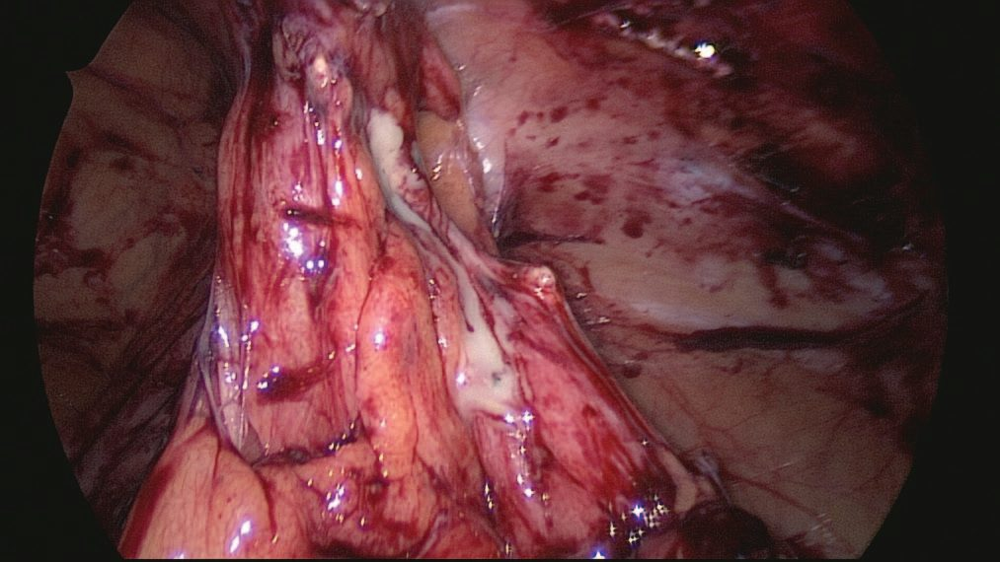
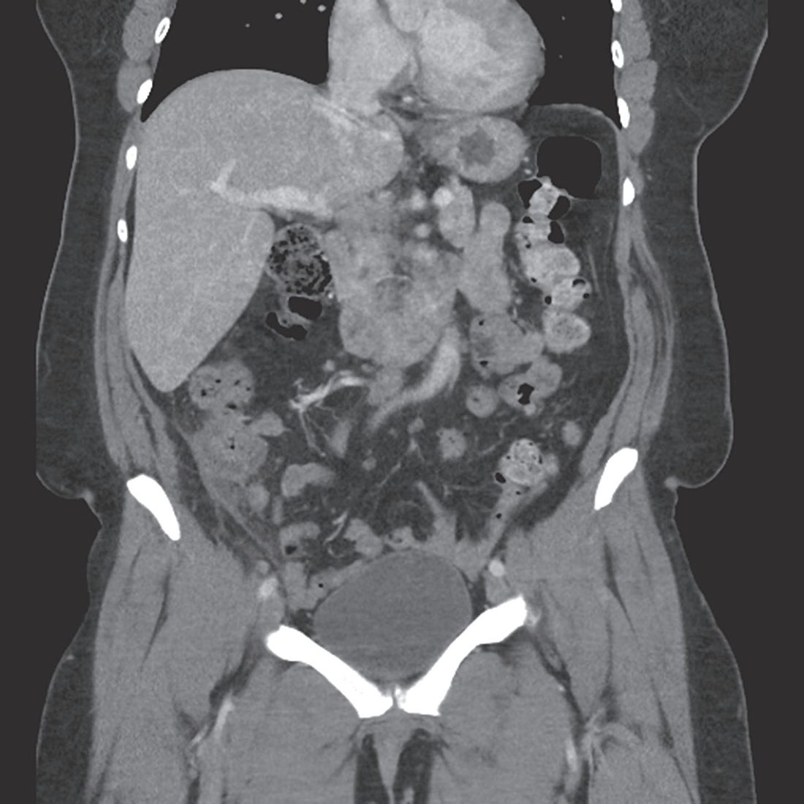
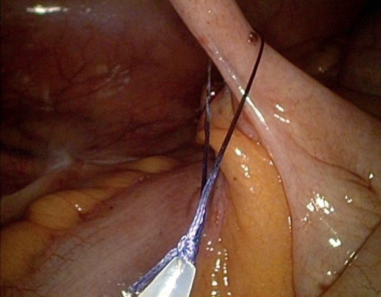
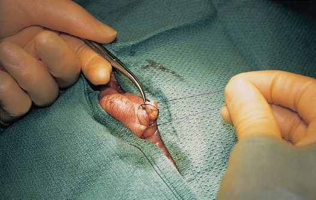
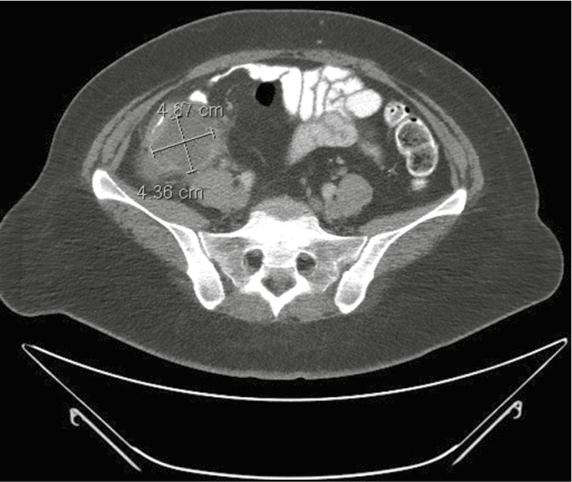

Appendicitis
Summary
- Acute appendicitis is the commonest cause of urgent abdominal surgery in the UK, with peak incidence in the teens to early twenties [1][2].
- It classically presents with periumbilical pain migrating to the right iliac fossa, anorexia and vomiting, though the "classic" pattern occurs in only about half of confirmed cases [1].
- Diagnosis is primarily clinical, supported by scoring systems, inflammatory markers and, where uncertain, ultrasound or CT [1].
- Treatment is appendicectomy, laparoscopic or open, although selected uncomplicated cases may be treated with antibiotics alone [1].
- There is no NICE guideline on appendicitis.
- The UK national guidance is the Academy of Medical Royal Colleges / NHS England Evidence-Based Interventions entry on appendicectomy without confirmation of appendicitis, which is about imaging rather than about the operation: its purpose is to reduce the negative appendicectomy rate by defining when a scan is needed and which scan [3].
- It applies to adults and children and carries a hard number the textbooks do not give, a "triple screen" with a negative predictive value above 99% [3].
Definition
Acute appendicitis is acute inflammation of the vermiform appendix [1].
Pathophysiology
- Obstruction of the appendiceal lumen, by a faecolith or appendicolith, lymphoid hyperplasia, a fibrotic stricture, or occasionally tumour or parasites such as Enterobius vermicularis, appears essential for the development of perforation, although in many early cases the lumen remains patent despite mucosal inflammation and lymphoid hyperplasia [1].
- Once obstructed, continued mucus secretion and inflammatory exudation raise intraluminal pressure, obstructing lymphatic drainage and causing oedema and mucosal ulceration with bacterial translocation to the submucosa.
- Progressive distension causes venous obstruction and ischaemia, permitting bacterial invasion through the muscularis propria and submucosa (acute appendicitis), and finally ischaemic necrosis of the wall (gangrenous appendicitis) with free bacterial peritoneal contamination; alternatively, adherent omentum and small bowel wall off the process to form an appendix mass or abscess [1].

Clinical features
Classically, poorly localised, colicky periumbilical (visceral, midgut) pain precedes anorexia, nausea and one or two episodes of vomiting, before the pain shifts and localises to the right iliac fossa as somatic parietal peritoneum becomes irritated, worsened by coughing or movement [1]. This visceral-to-somatic sequence is present in only around half of confirmed cases; atypical presentation is more common in the elderly [1]. Loss of appetite typically precedes pain by a few hours, and most patients feel nauseated; the pain is referred to the T10 dermatome centrally before localising [5].
Presentation by appendiceal position
Pelvic appendicitis may cause suprapubic discomfort, tenesmus or dysuria rather than anterior abdominal pain, with tenderness elicited only on rectal examination, hence a rectal examination is recommended in every patient with acute lower abdominal pain [1][5]. A retrocaecal appendix may produce a "silent" abdomen with deep tenderness confined to the loin and a positive psoas sign [1].
Signs
Cardinal signs are low-grade pyrexia, localised right iliac fossa tenderness (classically at McBurney's point), muscle guarding and rebound tenderness [1]. Other signs include the pointing sign, Rovsing's sign (palpation of the left iliac fossa causing right iliac fossa pain), the psoas sign, and the obturator sign [1].
Appendicitis in pregnancy
- Appendicitis is the most common non-obstetric emergency in pregnancy and the most frequent reason for general surgical intervention in this group, yet it has a typical clinical presentation in only 50% to 60% of cases [6].
- Several things conspire against the diagnosis: nausea and vomiting are non-specific and common in normal pregnancy; the normal febrile response may be blunted; physical examination is altered because the gravid uterus displaces the appendix to a more cephalad position; and biochemical markers are unreliable, since mild leukocytosis and raised CRP may be physiologically normal in pregnancy [6].
- The surgeon must also consider obstetric emergencies as a cause of abdominal pain, including preterm labour, placental abruption and uterine rupture [6].
The stakes justify routine imaging. With complicated appendicitis the risk of preterm labour is 11% and fetal loss 6%; with uncomplicated appendicitis the rates are lowest at 6% and 2%; and a negative appendicectomy carries rates of 10% and 4%, that is, an unnecessary operation is worse for the fetus than an uncomplicated true positive [6].
Etiology
No single unifying cause is established; decreased dietary fibre and increased refined carbohydrate consumption are implicated, paralleling colonic diverticulitis, with lowest incidence in high-fibre societies [1]. Bacterial proliferation is a mixed aerobic and anaerobic process, usually following luminal obstruction by a faecolith or lymphoid hyperplasia; obstruction by caecal carcinoma is an occasional cause in older patients [1].
Diagnosis
- Diagnosis is essentially clinical; a decision to operate on clinical suspicion alone can still lead to removal of a normal appendix in 15–30% of cases [1].
- Routine investigations include full blood count and urinalysis; selective investigations include pregnancy test, U&Es, CRP, abdominal radiograph, ultrasound and contrast-enhanced CT [1]. Leukocytosis with neutrophilia is present in about 90% of cases, but a normal white cell count is found in 10% and does not exclude the diagnosis [6].
- Ultrasound is particularly useful in children, thin adults and to exclude gynaecological pathology in women of childbearing age (diagnostic accuracy over 90%), though it is not useful in men to diagnose appendicitis; modern CT has around 95% sensitivity and specificity and reduces negative appendicectomy without increasing perforation from delay [1].

In pregnancy the initial study of choice is ultrasound with graded compression, using the same criteria as in the non-pregnant patient, though sensitivity and specificity fall to about 83% because of the gravid uterus. If ultrasound is equivocal, MRI without gadolinium is the best next study, with excellent preserved accuracy; routine use of MRI in pregnancy reduces the negative appendicectomy rate by 47% without a significant increase in perforation, and is cost-effective. If ultrasound is inconclusive and MRI is not immediately available, CT may be used [6].
- The UK recommendation is to place imaging inside a defined clinical pathway rather than to image everyone or no one. "Consider the imaging of patients with the suspicion of acute appendicitis in a defined clinical pathway.
- Where patients present with a high clinical suspicion of appendicitis, then imaging may not be necessary, but imaging can help identify which patients can be managed conservatively.
- If there is clinical doubt then imaging can reduce the negative appendicectomy rate. Most patients should have an ultrasound as the first-line investigation.
- If the diagnosis remains equivocal, a contrast-enhanced CT (preferably low dose) can be performed to give a definitive diagnosis prior to the patient returning to the surgical unit for a decision on management." [3].
The pathway is explicitly conditional on radiology capacity. It depends on an adequately skilled radiologist (consultant or registrar) or sonographer being available to perform the ultrasound in a timely fashion; if this is not possible, discretion should be used to proceed directly to limited-dose contrast-enhanced CT of the abdomen and pelvis [3].
- The "triple screen" is the single most quotable number here.
- In adults, negative appendicectomy can occur in up to 30% of cases where appendicitis is suspected clinically but imaging is not performed.
- However, the triple screen, CRP under 10, WCC under 10.5 and a neutrophil percentage under 75%, has a negative predictive value above 99% for excluding appendicitis, and imaging is not recommended in that setting [3].
Modality choice by patient group [3]:
| Patient group | Preferred imaging |
|---|---|
| Children | Ultrasound if there is diagnostic uncertainty. CT is not recommended in children given the risks of ionising radiation; MRI can be used in centres with appropriate expertise |
| Young patients, and women where a gynaecological differential is likely | Ultrasound, which is superior to CT in this setting |
| Obese patients | CT may be more appropriate, since ultrasound is more challenging |
| Older patients | CT is usually of more value, because the differential diagnosis is broader |
| Pregnant patients | MRI where available, having accuracy similar to CT without ionising radiation |
Table reformats the EBI guidance on imaging modality [3].
Scoring and Severity
The Alvarado (MANTRELS) score is the most widely used clinical scoring system [1]:
| Component | Feature | Points |
|---|---|---|
| Symptoms | Migratory right iliac fossa pain | 1 |
| Symptoms | Anorexia | 1 |
| Symptoms | Nausea or vomiting | 1 |
| Signs | Right iliac fossa tenderness | 2 |
| Signs | Rebound tenderness | 1 |
| Signs | Elevated temperature | 1 |
| Laboratory | Leukocytosis | 2 |
| Laboratory | Left shift | 1 |
- Table reformats the Alvarado score, total 10 [1]. A score of 7 or more is strongly predictive of appendicitis, and scores of 5–6 warrant further imaging [1].
- More recent consensus guidelines recommend the Appendicitis Inflammatory Response (AIR) score or the Adult Appendicitis Score (AAS) over the Alvarado score, which is useful for ruling appendicitis out but lacks specificity for ruling it in [6].
- Clinically, appendicitis is also broadly classified as mild (localised peritonitis, well patient, can await surgery overnight) or severe (generalised peritonitis, sick patient, requiring very urgent surgery) [2].
Treatment and Management
Non-operative management: a trial of intravenous antibiotics, for example metronidazole with a third-generation cephalosporin, plus bowel rest may be considered in uncomplicated appendicitis with no appendicolith, perforation or abscess, with initial success in around 85%, though 25–33% require surgery within a year for recurrence [1].
- The trial evidence is worth knowing in detail.
- The multicentre randomised CODA trial found antibiotics non-inferior to appendicectomy at 30 days on the EQ-5D, but 29% of patients underwent appendicectomy within 90 days, and patients with an appendicolith treated non-operatively were at higher risk of both appendicectomy and complications [6].
- The smaller single-institution COMMA trial found a similar 25% recurrence rate after non-operative treatment, similar early quality of life, but significantly lower quality of life in the non-operatively treated group at 1 year [6].
- On these data antibiotics are now considered an acceptable first-line treatment for acute uncomplicated appendicitis, and for patients managed non-operatively treatment consists of 10 days of antibiotics covering gastrointestinal flora, the first 24 hours given intravenously [6]. Proven or suspected complicated appendicitis without an abscess or phlegmon should be treated surgically [6].
The appendix mass
An appendix mass without generalised peritonitis is managed by the conservative Ochsner–Sherren regimen: antibiotics, CT assessment, radiological drainage of any abscess, and 4-hourly observations, with early laparotomy for clinical deterioration, a rising pulse, spreading pain or an enlarging mass. Around 90% resolve without incident, but interval appendicectomy is now debated given a higher-than-expected rate of underlying appendiceal neoplasm, up to 29% in patients over 40 in one trial, so follow-up CT or MRI and colonoscopy are advised in that age group [1].
Surgeries
Appendicectomy is the standard treatment, performed under general anaesthesia, laparoscopically or open [1]. A single perioperative dose of antibiotics reduces wound infection in the absence of purulent peritonitis; therapeutic intravenous antibiotics covering Gram-negative bacilli and anaerobes are given when peritonitis is suspected [1].
- Laparoscopic appendicectomy: preferred where expertise and equipment allow, particularly in women since it allows assessment of pelvic pathology; associated with lower wound infection and quicker recovery, and now the gold standard approach [1][2]. A three-port technique (umbilical camera port, suprapubic and left-lower-quadrant working ports) is typically used; the appendix is identified at the confluence of the taeniae coli on the caecum, a window is created in the mesoappendix close to the appendiceal base to avoid the appendicular artery, and the base is divided flush with the caecum to avoid stump appendicitis, using a stapler, Endoloop or clips [7]. Where endoloops are used, two loops secure the base and a third is applied distally to avoid spillage of luminal contents, the specimen being divided between them [6].

- Open appendicectomy: via a McBurney's (gridiron) incision centred one-third of the way from the anterior superior iliac spine to the umbilicus, or over a palpable mass; a muscle-splitting technique divides external oblique, internal oblique and transversus abdominis along their fibres; the appendix is delivered, its mesoappendix (containing the appendicular artery, an end-artery whose thrombosis causes gangrene) is clamped, ligated and divided, and the base is ligated and divided [1][7]. The classical open sequence continues with placement of a purse-string or Z stitch and inversion of the appendiceal stump [6].

- A normal appendicectomy rate of around 10% is accepted as the price of not missing true appendicitis, confirmed only by histopathology [2].
Incidental appendiceal neoplasms
Appendiceal adenomas and serrated polyps behave like their colonic counterparts and are most often found incidentally on post-appendicectomy pathology review; when confined to the muscularis mucosa and lamina propria without invasion they are adequately managed by simple appendicectomy alone, but they carry an increased risk of synchronous colonic pathology and can be a manifestation of serrated polyposis syndrome, so such patients should be counselled to undergo a full colonoscopy [6]. Pseudomyxoma peritonei occurs when a mucin-producing appendiceal tumour (most commonly a low-grade appendiceal mucinous neoplasm) perforates, spreading tumour cells and mucinous ascites through the abdomen; standard treatment is surgical cytoreduction with hyperthermic intraperitoneal chemotherapy, with outcomes determined primarily by histological subtype, disease burden and completeness of cytoreduction [6].
Incidental appendiceal neoplasms
A tumour is found in a small proportion of appendicectomy specimens, and the appendix is one of the commonest sites for gastroenteropancreatic neuroendocrine tumours [8]. Nonmucinous adenocarcinomas of the appendix behave like adenocarcinomas of the colon and rectum and are treated as such: complete staging with cross-sectional imaging and the tumour markers CEA, CA125 and CA19-9, followed by interval right hemicolectomy with sufficient lymph node sampling for staging, and consideration of adjuvant chemotherapy [8]. Some studies suggest that in selected patients with T1, well-differentiated tumours without lymphovascular invasion, a less extensive resection (simple appendicectomy or ileocaecectomy) may suffice, though the rarity of the disease limits prospective study [8]. Goblet cell adenocarcinoma, previously called goblet cell carcinoid, shows both neuroendocrine and mucinous features but is managed like a nonmucinous colonic-type adenocarcinoma, the neuroendocrine component being considered minor in the current WHO classification [8].
Complications
- Perforation (localised or generalised), a right iliac fossa "appendix mass" (appendicitis with a densely adherent caecum, omentum and ileum), right iliac fossa abscess (typically from perforated retrocaecal appendicitis) and pelvic abscess (from perforated pelvic appendicitis) are recognised complications [1].
- Removal of a normal-looking appendix occurs in a proportion of cases despite modern imaging [1].
- Removing a friable, gangrenous or perforated appendix is technically more difficult and requires gentle, meticulous handling, though the technique is the same as for uncomplicated disease [6].

Prognosis
- Uncomplicated appendicitis treated promptly by appendicectomy has an excellent prognosis.
- Perforation and generalised peritonitis carry increased morbidity, and delayed diagnosis, particularly in infants, the pregnant and the elderly, in whom presentation is often atypical, increases the risk of perforation and postoperative morbidity [1].
- Appendicectomy has been linked epidemiologically to a protective effect against subsequent development of ulcerative colitis [4].
The EBI rationale states the trade-off plainly: in many cases a typical history and physical examination are sufficient to reach a clinical diagnosis, but patients can have a negative appendicectomy, so there is a role for imaging if there is any diagnostic doubt, some reports suggest this is a more cost-effective way of managing suspected appendicitis, and imaging can also identify which patients may be managed conservatively [3]. MRI has comparable accuracy to contrast-enhanced CT but has played a limited role because of scanner access; the lack of ionising radiation makes it a safer option for younger or pregnant patients with an inconclusive ultrasound, where access and expertise allow [3].
References
- Bailey & Love's Short Practice of Surgery, 28th ed., Ch. 76 The vermiform appendix
- Oxford Handbook of Clinical Surgery, 5th ed., Ch. 26 Emergency surgery topics
- Academy of Medical Royal Colleges / NHS England Evidence-Based Interventions Programme: Appendicectomy without confirmation of appendicitis — best practice guidance (published January 2020, last reviewed September 2024), Rationale for recommendation; Recommendation; Summary ebi.aomrc.org.uk
- Schwartz's Principles of Surgery: ABSITE and Board Review, Ch. 30
- Browse's Introduction to the Symptoms and Signs of Surgical Disease, 6th ed., Ch. 15 The abdomen
- Sabiston Textbook of Surgery, 22nd ed., Ch. 94 The Appendix
- Maingot's Abdominal Operations, 13th ed., Ch. 41 Appendectomy
- Sabiston Textbook of Surgery, 22nd ed., Ch. 77